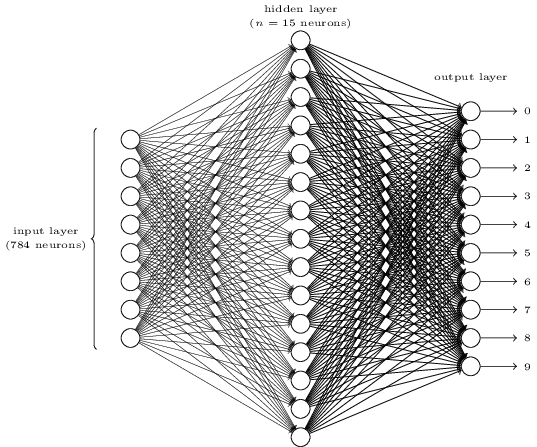

Programming 4- A Kickstart on Kickstarter
We are using the Bag of Words methods to predict whether a Kickstarter project will pass or fail based on the project’s description.
Data Source
We obtained our data source from Kevin who works for Kickstarter. He provided us with a data set that contained 40,000 projects along with their descriptions and whether they passed or not.
Data Cleaning
In order to make our project more efficient we cut down the words in the Bag of Words. We tried to focus on adjectives which were descriptive rather than articles which didn’t make a difference.
Testing Neural Networks

The program was created so we could find the best alpha, dropout percent, and hidden neurons for the network to use. We tested these using nested for loops so that we could find the best combination in relation to each other rather than just the best overall constants. We found that using all 40k projects was extremely time consuming, so we had to use only 50 projects instead. Even this took 12 hours to get the approx 400 runs we needed. After those 400 runs, we had the best constants to use for the network. We tried training the network using these constants and using all 40k projects.
Next Steps
We haven’t moved on from there but the next step is probably to find a neural service online, where we can train our network on more powerful computers that don’t have such limited memory.
Special Thanks
We would like to thank Fred Benenson for taking the time to Skype with us and Kevin for providing us with the dataset.